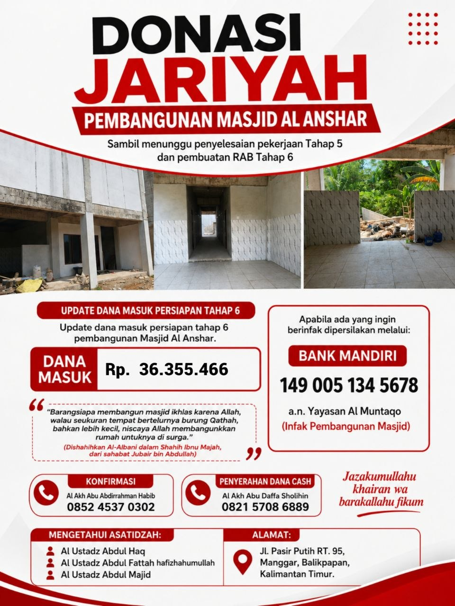

AMAL JARIYAH DENGAN DONASI MASJID
Pembangunan Masjid Al Anshor
Bersama mendukung pembangunan Masjid Al Anshor di komplek RTQ Al Imam Adz Dzahabiy.

Mari Bersama Mendukung Pembangunan Masjid
Masjid Al Anshor merupakan bagian dari lingkungan Rumah Tahfizhul Quran Al Imam Adz Dzahabiy. Pembangunan masjid ini diharapkan menjadi sarana ibadah dan pembinaan umat di lingkungan RTQ.
Kami mengajak kaum muslimin untuk turut mengambil bagian dalam amal jariyah ini sesuai dengan kemampuan masing-masing.
Informasi Donasi
Donasi dapat disalurkan melalui rekening:
BANK MANDIRI
149 005 134 5678
a.n. Yayasan Al Muntaqo
Dokumentasi Pembangunan